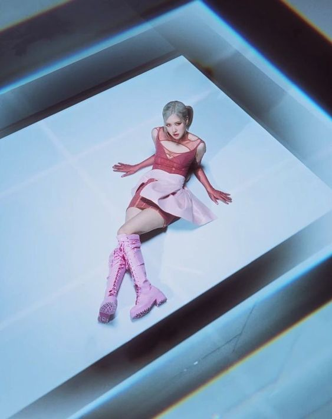
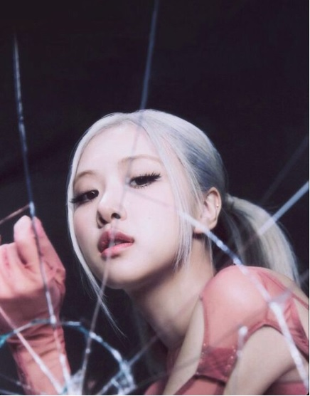
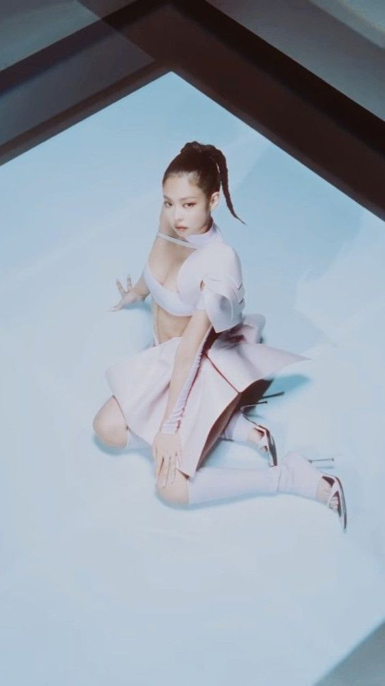
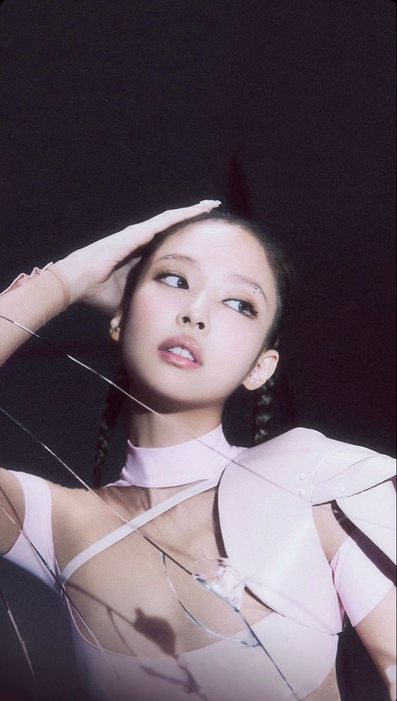

Kim Ji-soo nacida en la Provincia de Gyeonggi, el 3 de enero de 1995, es una cantante, actriz, modelo y presentadora surcoreana, miembro del grupo Blackpink. Se unió a YG Entertainment en 2011 y se convirtió en aprendiz durante cinco años antes de debutar con Blackpink
Rosé


Roseanne Park, nacida en Auckland, Nueva Zelanda, el 11 de febrero de 1997,también conocida por su nombre artístico Rosé, es una cantante, modelo, compositora y bailarina; miembro del grupo femenino Blackpink formado por la discográfica YG Entertainment en 2016. Su debut como solista fue el 12 de marzo de 2021, con el sencillo "On the Ground".
Lisa
Lalisa Manobal, nacida en Provincia de Buri Ram, el 27 de marzo de 1997, más conocida por su nombre artístico Lisa, es una rapera, modelo, cantante y bailarina tailandesa. Es integrante del grupo femenino Blackpink, formado en 2016 por YG Entertainment. Reconocida por su talento para el rap, el baile y el canto, Lisa habla tailandés, coreano, inglés y japonés. Hizo su debut en solitario con su álbum sencillo Lalisa en septiembre de 2021.
Jennie


Kim Jennie, nacida en Cheongdam-dong, Seúl, el 16 de enero de 1996, más conocida como Jennie, es una cantante, rapera y bailarina surcoreana. Es miembro del grupo femenino Blackpink formado por la discográfica YG Entertainment en 2016. Debutó como solista con el sencillo Solo el 12 de noviembre de 2018.